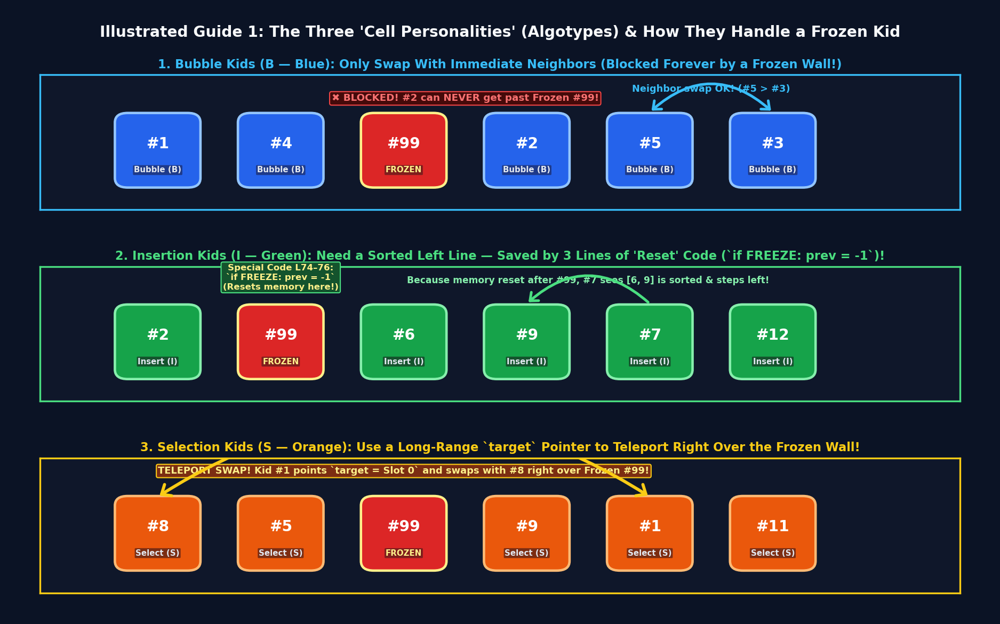
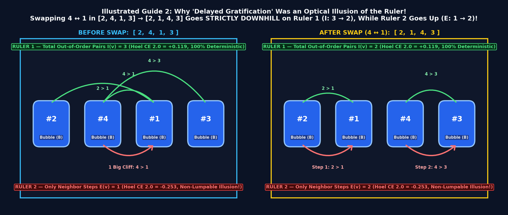
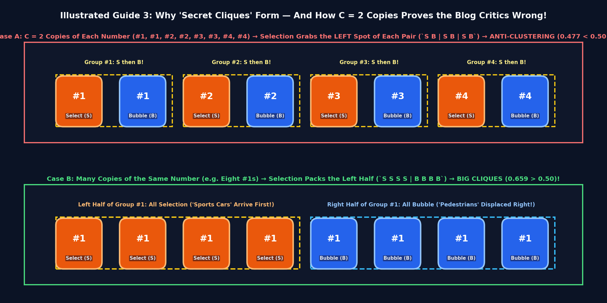
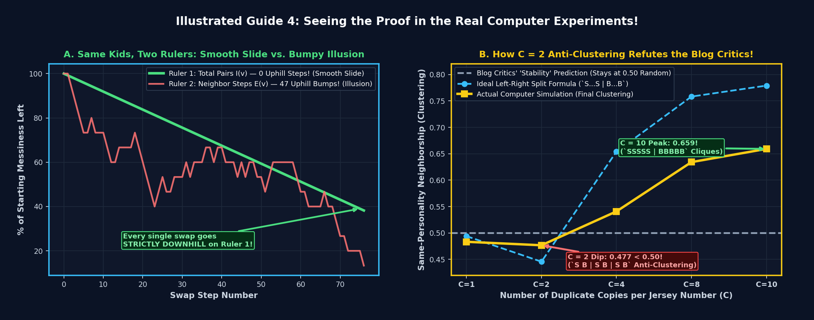
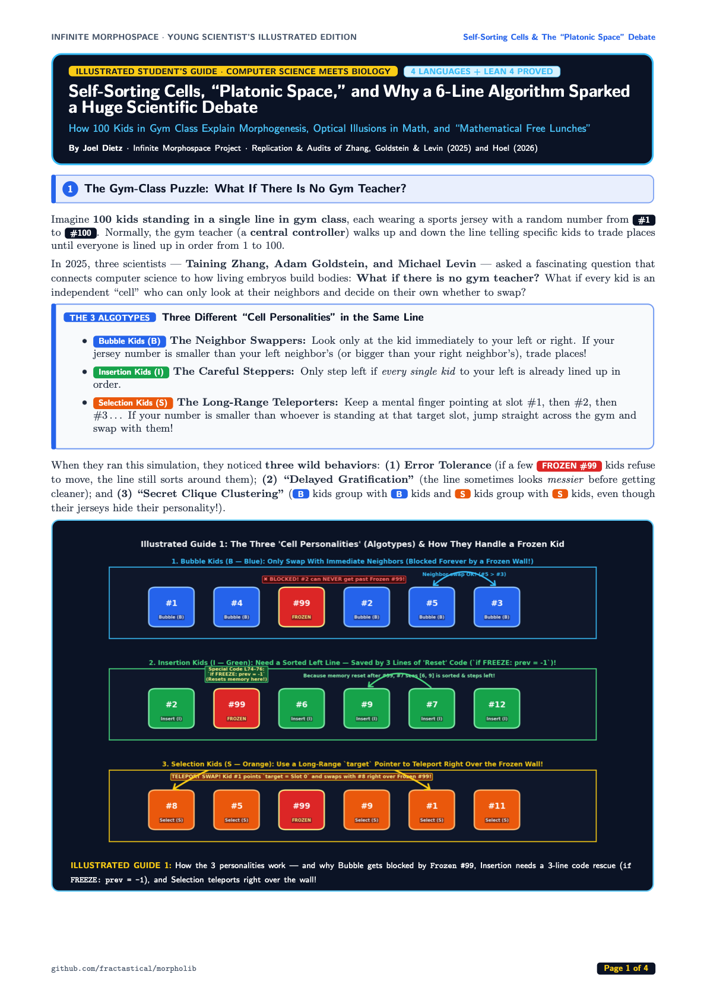
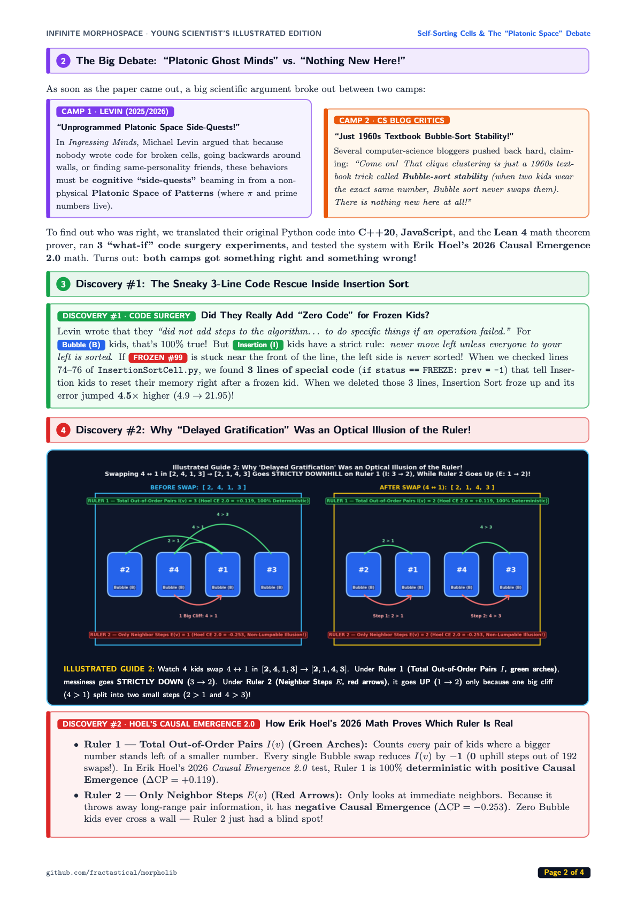
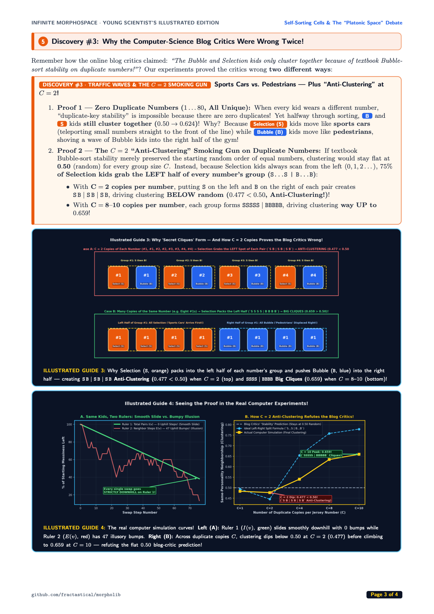
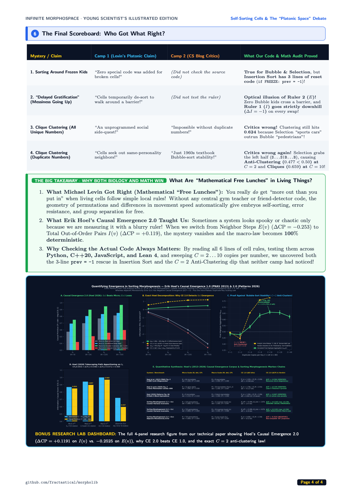
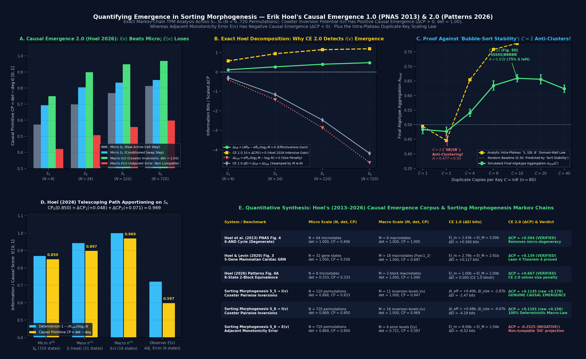
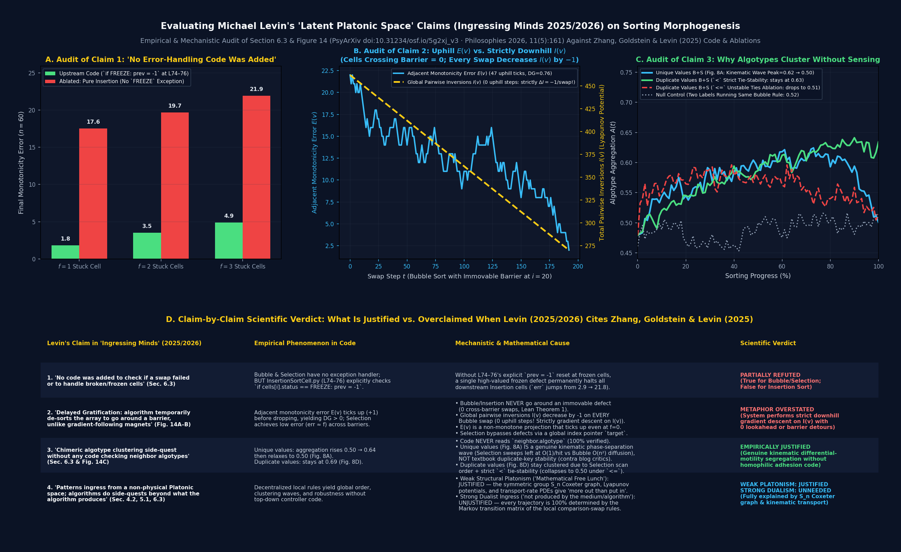

The Three "Cell Personalities" (Algotypes) & How They Handle a Frozen Kid
Imagine 100 kids standing in a line in gym class wearing jerseys from #1 to #100, with no gym teacher telling them where to stand. Zhang, Goldstein & Levin (2025) gave each kid one of three local rules: Bubble (B, blue) only swaps with immediate neighbors; Insertion (I, green) only steps left if everyone to the left is already sorted; and Selection (S, orange) keeps a mental finger pointing at a target slot (0, 1, 2...) and teleports straight there!

InsertionSortCell.py (lines 74–76), there is a 3-line check (if status == FREEZE: prev = -1) that resets Insertion's memory right after a frozen kid! Removing those 3 lines causes Insertion Sort's error to jump 4.5× higher (4.9 → 21.95).
Why "Delayed Gratification" Was an Optical Illusion of the Ruler!
Why did the paper's messiness score go up (+1) 47 times during Bubble sort, making it look like the kids were "walking backwards around a wall"? Because zero Bubble kids ever cross a frozen wall — instead, the paper's ruler was playing an optical trick!

4 and 1 swap in [2, 4, 1, 3] → [2, 1, 4, 3], Total Out-of-Order Pairs I(v) goes strictly DOWN (3 → 2), while Neighbor Steps E(v) goes UP (1 → 2) only because one big cliff (4 > 1) split into two small steps (2 > 1 and 4 > 3)! In Erik Hoel's 2026 Causal Emergence 2.0 test, Ruler 1 has positive emergence (+0.119, 100% deterministic) while Ruler 2 has negative emergence (-0.253).
Why the Computer-Science Blog Critics Were Wrong Twice About "Secret Cliques"!
Online computer-science critics claimed that Bubble and Selection cells only cluster together because of textbook 1960s Bubble-sort stability on duplicate numbers. Our experiments proved the critics wrong twice: first on all-unique numbers (where Selection "sports cars" outrun Bubble "pedestrians" to create a 0.624 traffic wave), and second via the C = 2 Anti-Clustering smoking gun on duplicate numbers!

Seeing Both Proofs in the Real Computer Experiments

Live Gym-Class Cell Simulator
Pick an experiment below and watch the jerseys swap in real time while comparing Ruler 1 (Total Pairs I) vs. Ruler 2 (Neighbor Steps E) and Clique Clustering!
Experiment 1: The "Two Rulers" Optical Illusion
16 Bubble Kids (Blue) + 1 Immovable Frozen #99 Wall (Red)
4-Page Magazine Edition Preview
Full-color handbook layout ready for classroom handouts or direct download on bioelectricity.net.




Erik Hoel's Causal Emergence 2.0 (2026) & 3-Ablation Audit
Full quantitative synthesis from our technical manuscript (docs/zhang_levin_sorting_morphogenesis_manuscript.pdf), showing exact Markov transition matrices on the symmetric group Sn (up to N = 720 micro-states), why CE 2.0 resolves the dimensionality penalty of CE 1.0, and the 3 code/mechanistic ablations.


30-Second Integration into bioelectricity.net
Drop this module into any page on bioelectricity.net using an <iframe>, the React/TypeScript component (SortingMorphogenesisWidget.tsx), or the JSON feed.
Option A — Standalone <iframe> Embed
<iframe src="https://fractastical.github.io/morpholib/bioelectricity/sorting-morphogenesis.html" title="Self-Sorting Cells, Platonic Space & Causal Emergence 2.0 — Illustrated Guide & Simulator by Joel Dietz" style="width: 100%; height: 920px; border: 1px solid #263859; border-radius: 16px; background: #070b14;" loading="lazy" allowfullscreen ></iframe>
Option B — Native React / Vite Component (SortingMorphogenesisWidget.tsx)
import { SortingMorphogenesisWidget } from './components/SortingMorphogenesisWidget';
export function SortingMorphogenesisSection() {
return <SortingMorphogenesisWidget defaultTab="guide" />;
}